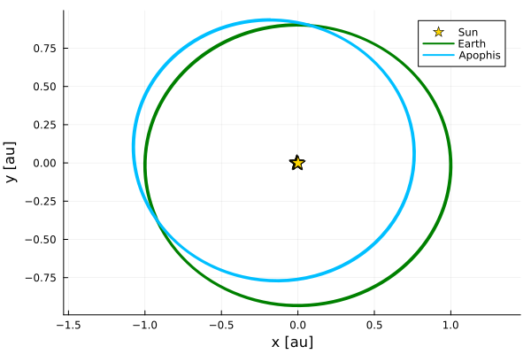
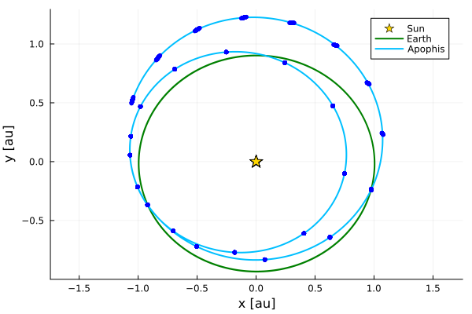

Propagation
NEOs uses an adaptive-step Taylor method [1] to propagate an initial condition in time; for details, see the TaylorIntegration.jl documentation. Below, we explain how to propagate an initial condition using Apophis as an example.
Dynamical model
First, we need to choose a dynamical model. Currently, NEOs supports four different models: sunearthmoon!, newtonian!, gravityonly! and nongravs!; all of which treat the object of interest as a test particle with null mass.
In the following table we summarize the dynamical effects included in each model. For futher details, check the documentation of each function.
| Effect | sunearthmoon! | newtonian! | gravityonly! | nongravs! |
|---|---|---|---|---|
| Newtonian accelerations (Sun, Earth, Moon) | ✅ | ✅ | ✅ | ✅ |
| Newtonian accelerations (+ eight planets) | ❌ | ✅ | ✅ | ✅ |
| Newtonian accelerations (+ 16 most massive asteroids) | ❌ | ❌ | ✅ | ✅ |
| Post-Newtonian accelerations [2] | ❌ | ❌ | ✅ | ✅ |
| Figure-effects (oblateness) [2] | ❌ | ❌ | ✅ | ✅ |
| IAU 1976/1980 Earth orientation model [3] | ❌ | ❌ | ✅ | ✅ |
| Moon's orientation model [3] | ❌ | ❌ | ✅ | ✅ |
| Non-gravitational accelerations [4] | ❌ | ❌ | ❌ | ✅ |
| Multi-threaded internal loops | ❌ | ✅ | ✅ | ✅ |
For now, let's use newtonian! as the dynamical model.
using NEOs
dynamics = newtonian!newtonian! (generic function with 1 method)Initial condition
Next, we need an initial condition, i.e.:
- an initial time [julian date TDB],
- an initial barycentric cartesian state vector [au, au/day].
For instance, consider Pérez-Hernández & Benet (2022) [5] OR6 solution for Apophis at December 17th, 2020:
using Dates
jd0 = datetime2julian(DateTime(2020, 12, 17)) # TDB
q00 = [-0.18034816472, 0.94069116764, 0.34573641385, # au
-0.0162659357312, 4.39163792E-5, -0.000395210949] # au/day6-element Vector{Float64}:
-0.18034816472
0.94069116764
0.34573641385
-0.0162659357312
4.39163792e-5
-0.000395210949Propagate
Finally, propagate q00 ten years into the future (well beyond the April 2029 close approach)
params = Parameters(maxsteps = 1_000, order = 15, abstol = 1E-12)
nyears_fwd = 10.0
fwd = propagate(dynamics, q00, jd0, nyears_fwd, params)tspan: (7655.5, 11308.0), x: 6 Float64 variablesThe three most important parameters used in propagate are:
maxsteps: the maximum number of steps,order: the degree of the Taylor expansions with respect to time,abstol: the absolute tolerance, used to compute the step size.
With NEOs plotting recipes we can visualize Apophis' orbit and compare it with Earth's.
using Plots
t0 = dtutc2days(DateTime(2020, 12, 17))
tf = dtutc2days(DateTime(2029, 4, 13))
scatter(params.eph_su, t0, tf, xlabel = "x [au]", ylabel = "y [au]",
label = "Sun", color = :gold, markersize = 8, markershape = :star5,
N = 10, projection = :xy, aspect_ratio = 1)
plot!(params.eph_ea, t0, tf, label = "Earth", color = :green, linewidth = 2,
N = 1_000, projection = :xy)
plot!(fwd, t0, tf, label = "Apophis", color = :deepskyblue, linewidth = 2,
N = 1_000, projection = :xy)
Jet transport
NEOs can exploit jet transport techniques to propagate a neighbourhood of initial conditions around the nominal orbit. For instance, we can parametrize the $3\sigma$ uncertainty box as follows:
using TaylorSeries
# Pérez-Hernández (2022) OR6 solution 1-sigma uncertainties
ss = [7.05E-9, 1.71E-9, 4.03E−9, # au
3.31E−11, 6.68E−11, 1.24E−10] # au/day
dq = TaylorSeries.variables!("dx", numvars = 6, order = 2)
q0 = q00 .+ 3ss .* dq6-element Vector{TaylorSeries.TaylorN{Float64}}:
- 0.18034816472 + 2.115e-8 dx₁ + 𝒪(‖x‖³)
0.94069116764 + 5.13e-9 dx₂ + 𝒪(‖x‖³)
0.34573641385 + 1.2090000000000001e-8 dx₃ + 𝒪(‖x‖³)
- 0.0162659357312 + 9.930000000000001e-11 dx₄ + 𝒪(‖x‖³)
4.39163792e-5 + 2.004e-10 dx₅ + 𝒪(‖x‖³)
- 0.000395210949 + 3.7200000000000006e-10 dx₆ + 𝒪(‖x‖³)and propagate it using the same syntax as before
fwdJT = propagate(dynamics, q0, jd0, nyears_fwd, params)tspan: (7655.5, 11308.0), x: 6 TaylorSeries.TaylorN{Float64} variablesNow, we have a polynomial approximation to the evolution of initial conditions close to the nominal orbit, which we can sample via Monte Carlo
using Distributions
lb, up = fill(-3.0, 6), fill(3.0, 6)
dist = Product(Uniform.(lb, up))
dx = [rand(dist) for _ in 1:100]100-element Vector{Vector{Float64}}:
[2.0950106839183515, -2.716815806578146, -0.48676791220265114, 0.5958744163304344, 1.877983686095706, -2.18697435542232]
[-2.2181016520886447, 2.5301845832120327, -0.5307704171830743, -2.574151442993858, 1.1974538746598773, 0.9507975030873945]
[-0.8678462562487317, -1.734461837335435, -2.630073861465189, 2.803683456547728, -2.312075418594434, 2.432251712676983]
[1.5230657622801456, -2.509650509968866, 1.4568178064606352, -2.6470895879511325, -1.1749595119658245, 0.8907313679397664]
[-1.7871876054122555, -2.177630982181344, 2.3261393817777636, 1.5403496445226033, -1.9971598070202408, 2.571219417291003]
[2.870269586666713, 1.8584603849458174, 1.4813682197318538, 0.5863951093879711, 0.7133169833395412, 1.901539577602792]
[1.2248988586025682, 0.07832486766184177, 0.934968618367976, -0.17687006217063317, 0.09767099703865245, 2.682291794432306]
[0.12222116930164972, 2.3687877177565477, -0.7428533138898623, -0.9024220134905532, 0.6453132994758874, 1.998472071789985]
[-1.5695361733211208, -2.4759591377514587, -1.5445252202405164, -1.7265157574769223, -2.553829529115487, -0.06359451593627918]
[0.9257916149262133, -1.3957844821419416, 2.8576310980539468, -0.03717130050063666, 0.5221289165411647, 2.2583093618781778]
⋮
[0.222976067003553, 1.7931780708099172, 1.5516781792321321, -1.188623507556978, -0.3300832029950427, -1.954948188471561]
[1.192760883028635, 2.0578050041876397, 2.446548722231057, -2.3670068369467208, -0.1726900401109317, 0.9831993789667219]
[-2.3603397609575847, -2.162111444303756, -2.166905881794822, -1.8001998414740958, -0.4466131081999629, -0.6917045123849501]
[2.6799777835327676, 0.6254522086979839, -0.7353929833756587, -2.812087750494608, -2.6725267599164675, -1.9256104707100647]
[0.06566967186885897, -0.907939693815754, 2.1236077234832784, -1.2124042779177697, -0.9780549680603574, -1.1113208389792864]
[-0.1320776677261306, 1.1713321634718703, -1.720320867245867, 0.5971964863207848, 0.21709036050300012, 2.957496486178992]
[-0.8755207299972669, 2.715171406483944, -2.822828751222916, 1.3449643471970392, -1.994957838613271, -1.304748907986333]
[-2.1675535220502042, 1.9778873566496458, -0.7415072666808826, -1.7180285354772578, 0.5358833606428464, 0.29073068967275306]
[0.5371654030239514, 2.7209062952875636, 1.43648292042925, -0.07289160268932982, 2.410977299309362, -2.5781201622293013]and then evaluate in time, in order to visualize the growth of the uncertainty region after the 2029 close approach.
t0 = dtutc2days(DateTime(2028, 4, 13))
tf = dtutc2days(DateTime(2030, 4, 14))
ts = LinRange(t0, tf, 25)
scatter(params.eph_su, t0, tf, xlabel = "x [au]", ylabel = "y [au]",
label = "Sun", color = :gold, markersize = 8, markershape = :star5,
N = 10, projection = :xy, aspect_ratio = 1)
plot!(params.eph_ea, t0, tf, label = "Earth", color = :green, linewidth = 2,
N = 1_000, projection = :xy)
plot!(fwd, t0, tf, label = "Apophis", color = :deepskyblue, linewidth = 2,
N = 1_000, projection = :xy)
for t in ts
ps = map(d -> fwdJT(t)(d)[1:2], dx)
scatter!(first.(ps), last.(ps), color = :blue, markersize = 3,
markerstrokewidth = 0, label = "")
end
plot!()
References
- [1]
- À. Jorba and M. Zou. A Software Package for the Numerical Integration of ODEs by Means of High-Order Taylor Methods. Experimental Mathematics 14, 99–117 (2005).
- [2]
- T. Moyer. Mathematical formulation of the Double Precision Orbit Determination Program (DPODP). Jet Propulsion Laboratory Technical Report, 32–1527 (1971).
- [3]
- W. Folkner, J. Williams, D. Boggs, R. Park and P. Kuchynka. The Planetary and Lunar Ephemerides DE430 and DE431. Interplanetary Network Progress Report 42–196, 1–81 (2014).
- [4]
- B. G. Marsden, Z. Sekanina and D. Yeomans. Comets and nongravitational forces. V. The Astronomical Journal 78, 211–225 (1973).
- [5]
- J. A. Pérez-Hernández and L. Benet. Non-zero Yarkovsky acceleration for near-Earth asteroid (99942) Apophis. Communications Earth & Environment 3 (2022).